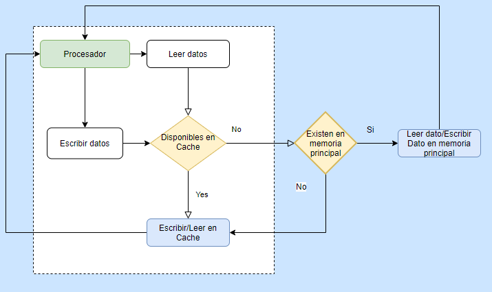
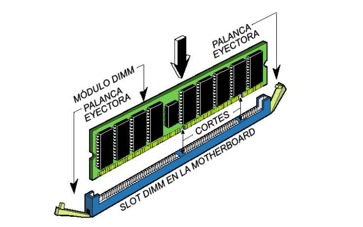
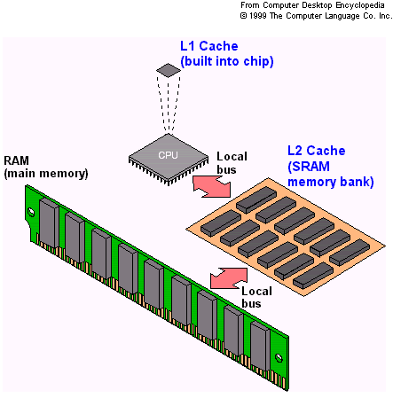
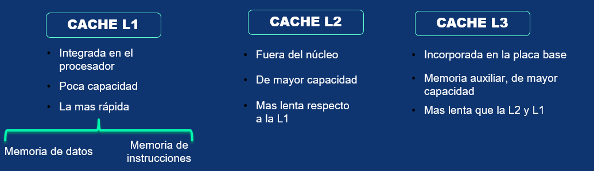

MemoriasEn terminos, generales un memoria es una arquitectura compuesta por circutos integrados, cada chip es de millones de condensadores y transistores, que almacena datos e instrucciones de los programas ejecutados por el procesador. Internamente son un conjunto de celdas basicas que almacena bits, desde la creacion del transistor han ido evolucionando a grande circuitos.En su componentes mas importantes es el decodifcador debio a que administra las celdas que deben activarse o leerse. Primeramente exite una clasifcacion de memorias volatile y no volatiles:
Las memorias volátiles necesitan estar alimentadas a la energía para mantener la información dentro de ellas a diferencia de las no volátiles puede permanecer la información aun si no esta alimentada. Un tipo de memoria volátil es la RAM la memoria de acceso aleatorio conocida por tener un alta velocidad y se un componente esencial en los dispositivos informáticos Las memorias no volátiles contiene un tipo de memoria diferente a las no volátiles pues se les conocen como memorias flash, algunas tecnologías basadas en estas memorias han ido evolucionando hasta tener grandes velocidades de lecturas y de escritura como lo son los SSD. Manjeo de memoriaEl manejo de memoria lo realiza el procesador encargado de extraer y almacenar la información en dos tipos de memorias la memoria principal y la memoria cache.

Ilustracion que muestra el manejo de memoria Memoria PrincipalLa memoria principal de semiconductor utiliza en su arquitectura circuitos integrados basados en semiconductores para almacenar información. Un chip de memoria de semiconductor puede contener millones de minúsculos transistores o condensadores. En las computadoras modernas, la memoria principal consiste casi exclusivamente en memoria de semiconductor volátil y dinámica, también conocida como memoria dinámica de acceso aleatorio o más comúnmente RAM. La memoria principal que se incrusta en la placa base donde se encuentra el procesador, tiene una gran capacidad pero a diferencia de la memoria cache es mas lenta.

Memoria RAM (Memoria de Acesso Aleatorio) Memoria CacheDentro de nuestro procesador no sólo se encuentran los componentes que hacen posible sus enormes capacidades de computación, también hay una pequeña memoria que se encarga de conseguir que el trabajo de nuestro procesador pueda realizarse a la velocidad que este opera. Es la memoria de acceso rápido de una computadora, que guarda temporalmente las últimas informaciones procesadas. La memoria caché es un búfer especial de memoria que poseen las computadoras, que funciona de manera similar a la memoria principal, pero es de menor tamaño y de acceso más rápido. Es usada por el procesador para reducir el tiempo de acceso a datos ubicados en la memoria principal que se utilizan con más frecuencia. La caché es una memoria que se sitúa entre la unidad central de procesamiento (CPU) y la memoria de acceso aleatorio (RAM) para acelerar el intercambio de datos.

Estructura de memorias Cuando se accede por primera vez a un dato, se hace una copia en la caché; los accesos siguientes se realizan a dicha copia, haciendo que sea menor el tiempo de acceso medio al dato.Cuando el procesador necesita leer o escribir en una ubicación en memoria principal, primero verifica si una copia de los datos está en la memoria caché; si es así, el procesador de inmediato lee o escribe en la memoria caché, que es mucho más rápido que de la lectura o la escritura a la memoria principal.

Dentro de la memoria cache se subdivide en varios niveles la cache L1 tiene un acceso rápido pero es de muy poca capacidad , hay dos tipos la de datos y la de instrucciones. Después tenemos el siguiente nivel cache L2 es una memoria que tiene el doble de capacidad de la del primer nivel, solamente que tiene menor velocidad y tenemos por ultimo la cache L3 que sigue siendo mas rápida que la memoria principal, pero es mas lenta que las ultimas dos, aun así se utiliza para guardar la información que no se guardo en las localidades de las anteriores memorias. |